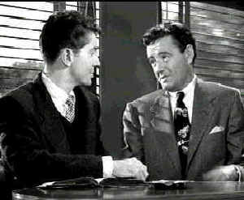

|
Strangers
on a Train/A,B+
|
|
Warner/1951/101m,103m/FS
1.33 |
A cab pulls up to a train station.
The camera focuses on
the opening door, exposing only passengers feet as he
departs. He's wearing flashy black and whites. Another cab,
another pair of feet clad
in nondescript shoes . A glimpse of tennis rackets being carried
amongst the baggage. Director Alfred Hitchcock follows the feet,
alternating between those of the two passengers through the
station and past the gates. A close shot of train tracks from
the point of view of the train. The feet again, now on the
train, finding seats, a crossed leg. The nondescript shoe
accidentally kicks one black and white. A conversation begins an
inevitable nightmare ride on a carousel that doesn't want to
stop. The economy of the opening is sheer brilliance. Strangers
on a Train is a showcase of devious delight for Hitchcock.
 |
|
Aren't you Guy
Haines? ©Warner |
The two men on the train are Guy Haines, a
top ranked tennis star, and Bruno Antony, insidious dandy who is
altogether too familiar with Haines' career and private life.
Antony hypothetically proposes a diabolical solution to
resolve their individual problems: an exchange of murders.
Haines is appalled, but Anthony does not let go.
This ranks with the very best of
Hitchcock. It is the most direct of the great director's plot
lines with most of the unexpressed convolutions going on
in the twisted mind of Bruno Antony. Every aspect of the
production has been polished and refined with astounding care.
Hitchcock had a script done by Raymond Chandler, with a polish
from the "Ben Hecht factory." Based on the
Patricia Highsmith novel, it is thoroughly elegant in
execution; a brilliant map to guide perfect Hitchcock to
journey with nary a false turn.
Farley Granger is well cast in the role
of Guy Haines, turning an excellent performance.
Granger evokes the confusion and desperation of the hero.
Still, it is Robert Walker in the role of Bruno
Antony who dominates this film. He creates a sly,
compelling, horrifying villain. Walker is just great.
Every gesture serves to advance the portrait of Antony. He's the
perfect psychopath. Even when he is not on screen, his celluloid
ghost casts a faint shadow over every frame.
The atmospheric black and white photography of Robert Burks is
simply flawless, in this the first of eleven films he shot for
Hitchcock. The lighting and camera set-ups serve to consistently
heighten the suspense. Dimitri Tiomkin has written a wonderful
score, twisting playful elements into the macabre.
Hitchcock has never made a movie with
more intense editing. Each cut is a building block to a
skyscraper of colossal tension that topples in a entertaining
finish. Strangers on a Train made in 1951 is an
example of a great director at the height of his powers.
Watching black and white films on DVD
through a component connection brings out the best in the
stunning gray scale images. Strangers on a Train is no
exception. There's no bothersome cross-color induced by
intricate fabric patterns. Warner provides two versions on the
flip sides of the DVD. The U.S. release version is not quite as
clean as the slightly altered British version. Still, both
prints are quite good. Sharp DVD detail permitting every
nuance of Hitchcock's meticulous direction to be observed. And
all the sinister shadows of Hitchcock's vision come to beautiful
life with excellent contrast and shadow detail. The mono sound
is serviceable. |
|